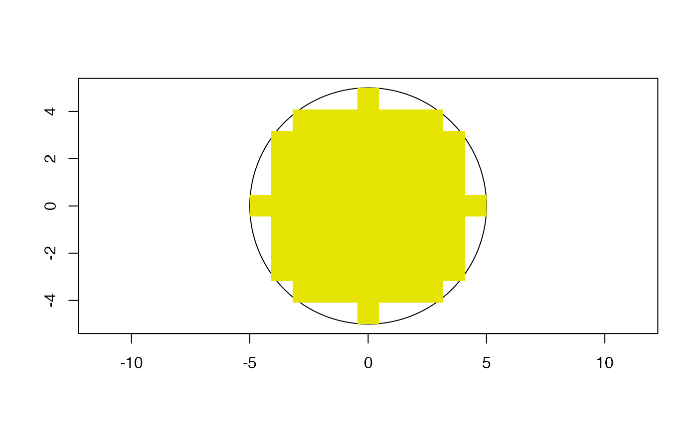
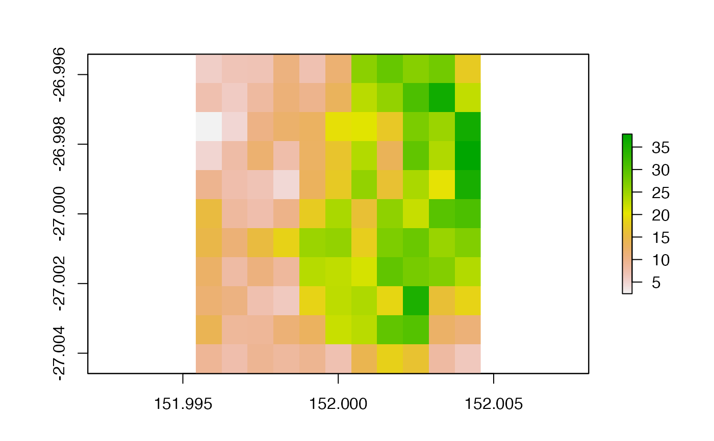
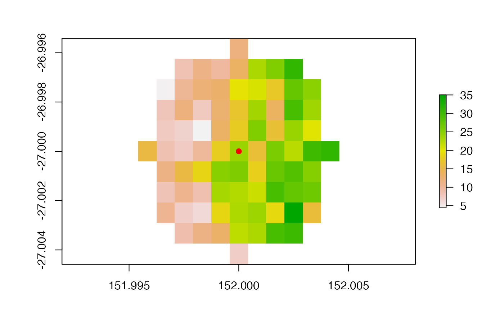

Generates a circular masking matrix
make_circ_mask(buff = NULL)
| buff | The number of cells away from the central cell to mask. The return matrix will have dimensions of `(2 * buff) + 1`. |
|---|
Masking matrix for use in point queries with values of 0 in the 'keep zone' and NA otherwise.
adapted from https://scrogster.wordpress.com/2012/10/05/applying-a-circular-moving-window-filter-to-raster-data-in-r/ . Used in SLGA when getting summary statistics around points, but can potentially be applied to any raster/point data combination. See recipe below.
#>#>library(slga) # concept demo plot(sf::st_buffer(sf::st_point(c(0,0)), 5), axes = TRUE, reset = FALSE)plot(raster::raster(slga:::make_circ_mask(5), xmn = -5, xmx = 5, ymn = -5, ymx = 5), add = TRUE, legend = FALSE)# test with real data poi <- c(152, -27) aoi <- slga:::validate_poi(poi = poi, product = 'SLPPC', buff = 5) slope <- get_lscape_data('SLPPC', aoi) plot(slope)# note: if sf_use_s2 = TRUE, this buffer distance will be Small. plot(sf::st_buffer(sf::st_centroid(sf::st_as_sfc(aoi)), 0.000833 * 5), add = TRUE)# }